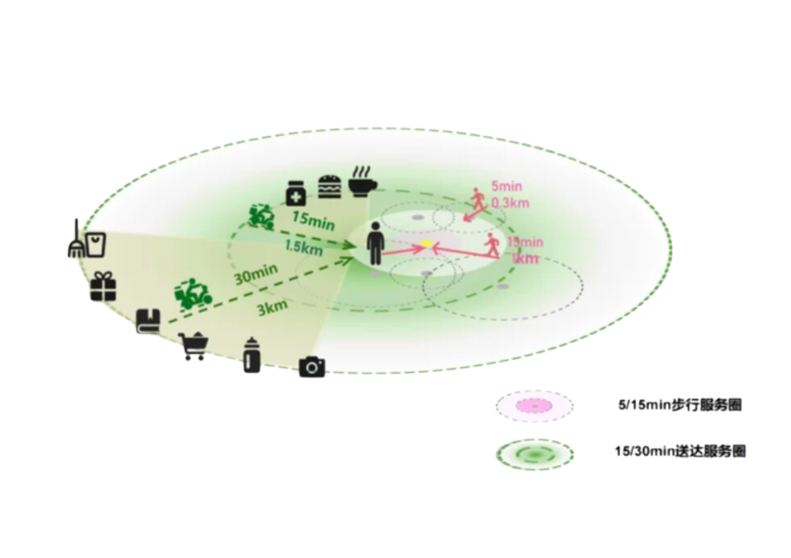

宅心常驻
悬浮查看详情
“宅经济”是近年来呈现快速发展的一种经济现象,是居民在住宅中参与产品或服务的价值创造活动,或者是与居民在住宅中完成商品或服务交易相关的经济活动,呈现出与传统经济活动显著不同的特征。
简单来说,“宅经济” 就是与居民待在家里相关的经济活动。
—— 宅居消费的“大数据”分析
引言： 当都市的霓虹灯下，喧嚣逐渐褪去，家的温暖便成了最后的避风港。而外卖，就像一股清流，悄无声息地融入了我们的日常生活，编织着“宅”的新篇章。今天，让我们一起透过外卖数据，探寻“宅经济”背后的生活图景。
你了解宅经济吗？
“宅经济”是近年来呈现快速发展的一种经济现象,是居民在住宅中参与产品或服务的价值创造活动,或者是与居民在住宅中完成商品或服务交易相关的经济活动,呈现出与传统经济活动显著不同的特征。
简单来说,“宅经济” 就是与居民待在家里相关的经济活动。
新闻一览
现如今，疫情已然过去，人们恢复正常的生产生活，但“宅经济”发展不会停滞。
作为宅经济中最为活跃的一分子，外卖，正悄然编织着都市生活的新图景。
外卖服务以其便利性和多样性，成为了现代人生活的一个重要组成部分。无论是繁忙的上班族，还是追求便捷的学生，外卖都已成为他们日常生活中不可或缺的一环。
为了探究宅经济的发展，我们统计了各大省市的外卖销量情况。
食行千里
外卖平台的配送网络遍及城市的每一个角落，从一线城市到三四线小镇，外卖员的足迹都无处不在。
鼠标悬浮查看具体数据
各大城市外卖订单量的排名不只是单纯的数字，更折射出地域文化与都市生活方式的差异。
如果只从城市排布来看，外卖消费者的分布是这样的：
经过调查，外卖订单量最多城市的Top10分别是他们：
点击左下角播放
排行榜上的Top10城市，是“宅经济”的先锋。它们的外卖订单量遥遥领先，见证了“宅”生活的蓬勃发展。
有你的城市吗？
同时，我们发现大多数人更倾向于点本地特色菜品。
无论是本地人的坚守还是外来人的尝鲜，都是对当地风俗的热爱。
宅食之道
影响大家点外卖的因素有很多，为了进行分析，我们整理出了以下几条：


外卖消费频次和人群分布揭示了宅经济下中国人的生活节奏。数据显示，每周点1-2次，3-4次，5-10次的消费者，组成了外卖大军中的大多数，20-34岁的人们已经把外卖写入自己的食谱，女性的订单量占比更是达到了59.0%。
我们已经将外卖“生活化"，“常态化”。究竟是自己下厨不方便，还是出门下馆子太劳累？或许，这些都是原因的一部分。
大多数人认为自己没有时间或不想做饭，也有半数人图方便省事，于是我们统计了各个时间段的外卖品类占比，看看是不是有当我们不想做饭的时候，选择饭点外卖会更多。
事实果真如此，消费者的“懒需求”正在被外卖服务无限放大：在早饭，午饭，晚饭的时间点前，美食类外卖的占比高于90%。看来大家是真的宅在了家中，将“宅”进行到底。同时随时随地的外卖选择也让都市人在快节奏生活中找到了喘息的空间。
此外，对所有外卖的品类分析中，我们发现当下人们的外卖包装里面不只有主食饭菜，还有各种各样的餐饮，如甜点，蔬果，饮品。
“宅经济”模式下，生产和消费均呈现出“全天候”“多样化”的特点。

尽管没有到店，”顾客就是上帝“的宗旨仍然在我们和店家心中，像令牌，又像训诫。外卖平台究竟用了怎样的巧计夺得了消费者的欢心？
作为明智的消费者，我们考虑的因素真不少。65.31%的人追求更多更好的餐饮，50.38%的人会更考虑配送的速度，配送费、价格、习惯、配送态度，这都是我们的考虑因素。而配送的速度和配送费都与配送距离息息相关。
可见，外卖已经不再是单一的服务，而是一个涵盖餐饮、物流和技术的综合体系。在线餐饮让更多的餐饮服务从不可达变成了30分钟内可上门的服务，使人们在饮食上有更多选择，2023年用户平均购买的餐饮品类数比2020年增加了1.3个。
在宅经济模式下，外卖平台的服务也在不断优化，平台间竞争日益激烈。各大平台都不断优化配送服务，增加可选品种，争取到了自己的死忠粉。
其中美团和饿了么等平台凭借多样化的餐饮选择与迅捷的配送服务，获得了大量忠实用户。
因此，分析这两个平台的数据，更有利于我们掌握大多数人的情况。统计了2018-2024年美团外卖各品类订单量的占比后，我们得出了下面的统计表。
尽管有所下降，快餐简餐仍然是超过半数人的首选，而饮品作为新兴的非主食类饮食，近年来”异军突起“，成为了外卖行业的”后起之秀“。
此外，外卖价格也会影响我们的选择。
21-40元是我们选择的大区间，外卖并不会成为我们放纵自我的奢侈之地。
在外卖需求的飞速增长下，对外卖行业的要求也越来越高，外卖企业的规模也在不停发展。
点击缩略图查看完整数据
更大规模的外卖企业，为当前和之后外卖乃至宅经济的发展提供了强有力的支撑。因此我们有充分的理由相信，外卖经济在未来仍然有着不俗的发展势头。而从商家和消费者的评论来看，外卖在我们的心中早已是不可或缺的一环。
词频分析：通过jiaba分词器对全部评价文本进行了清洗，同时排除无意义的动词连接词等，获得了以上31个好评高频词，对其进行统计
宅智未来
作为“宅经济”的重要组成，外卖已经渗透进人们的生活：从年轻人到老年人、从早午饭到下午茶、夜宵，都能看见外卖的身影，都有着宅经济的体现。同时，根据《2023年中国外卖平台消费者认为外卖行业需改进的方面》，位居前列的有商家的服务质量、食品质量和分量、食品的健康程度，这背后折射出的是消费者对于健康的重视、对外卖食品安全等需求层次的提高，相信有更多的人参与进外卖消费之中，能够给我们的食品健康和生命安全带来更好的保障。
同时，政策、经济、社会和技术四驾马车也持续为餐饮外卖行业保驾护航。自2020年疫情发生以来，针对餐饮行业的复苏与稳定，各级政府出台了有力的相关政策，涉及税收减免、社保费减免、金融贷款支持等多方面，全力保障中小餐饮企业顺利渡过疫情期，实现市场的可持续健康发展；在经济、社会、技术多重利好因素的作用下，我国餐饮外卖行业发展脚步依然稳健有力。
“宅经济”是随着经济发展， 在信息技术进步和广泛应用的推动下而出现、发展的一种生活模式和生产方式，满足了人们需求层次不断提高的要求，也适应了企业降低成本、提高效率、增强灵活性的发展需要。随着新一轮科技革命和产业变革广泛兴起，科学技术更新迭代，我国经济高质量发展，居民消费水平不断提高，相关法律法规不断完善，我们预测“宅经济”发展趋势如下：
“宅经济”发展范围不断扩大。目前已经渗透至人们生活的各方面：电子商务、大众传媒、仓储物流、移动通信、餐饮食品、医药保健等，在物联网、大数据、人工智能和云计算等技术的支撑下，会有更广泛的消费需求通过互联网得到实现。
“宅经济”参与主体将越来越广泛。目前，“宅经济”已经渗透到各个年龄阶段的人群，随着政府部门相关适老化法律法规不断完善，企业相关技术不断更新，中老年人群参与率仍会提高。
“宅经济”发展质量将不断提高。信息时代下，越来越多的线下实体店向线上转型，抢占线上市场，实现线下线上相融合；在基础设施方面，随着基础设施投资增加和网络技术改进，“宅经济”的网络服务质量不断提高，在改善消费者数字体验的同时提供更加安全可靠的服务;在商业模式方面，随着企业商业思维的转变，“宅经济”服务领域和服务质量都将不断提高。